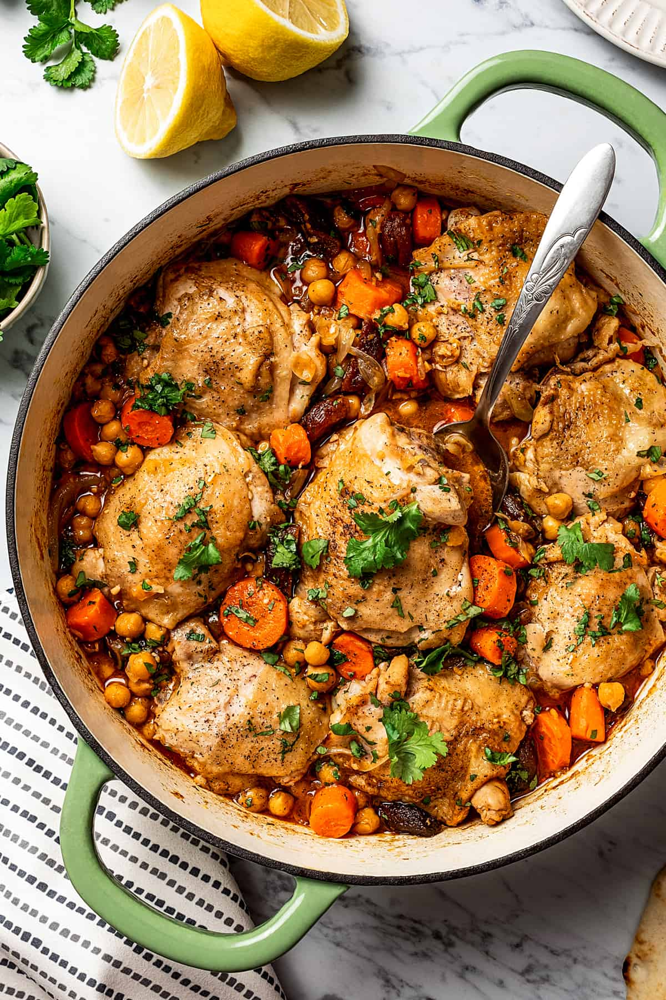

Home
Recipes
Measurements Conversion
Common Ingredients
Moroccan Chicken Tagine
Ingredients
2 lbs boneless, skinless chicken thighs
1 large onion, chopped
3 cloves garlic, minced
1 tsp ground cumin
1 tsp ground coriander
1/2 tsp ground cinnamon
1/4 tsp ground ginger
1/4 tsp ground turmeric
1/2 tsp salt
1/4 tsp black pepper
1/4 cup olive oil
1/2 cup chicken broth
1/2 cup pitted green olives
1/4 cup chopped fresh cilantro
Instructions
Preheat oven to 375°F.
Season the chicken with salt and pepper.
Heat the olive oil in a tagine or large oven-safe pot over medium-high heat.
Add the chicken and brown on all sides, about 5 minutes per side.
Remove the chicken from the pot and set aside.
Add the onion and garlic to the pot and sauté until softened, about 5 minutes.
Add the cumin, coriander, cinnamon, ginger, turmeric, salt, and black pepper and stir to combine.
Add the chicken broth and stir to combine.
Return the chicken to the pot and stir to coat with the sauce.
Top with the olives and cilantro.
Cover and bake in the preheated oven for 30-40 minutes, or until the chicken is cooked through and the sauce has thickened.
Remove from the oven and let rest for a few minutes before serving.
